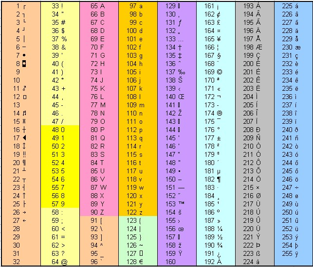

ASCII (ang. American Standard Code for Information Interchange) - 7-bitowy
kod przyporz¹dkowuj¹cy liczby z zakresu 0-127 literom (alfabetu angielskiego),
cyfrom, znakom przestankowym i innym symbolom oraz poleceniom
steruj¹cym. Przyk³adowo litera "a" jest kodowana liczb¹ 97, a znak spacji - 32.
Litery, cyfry oraz inne znaki drukowane tworz¹ zbiór znaków ASCII. Jest to 95
znaków o kodach 32-126. Pozosta³e 33 kody (0-31 i 127) to tzw. kody steruj¹ce
s³u¿¹ce do sterowania urz¹dzeniem odbieraj¹cym komunikat, np. drukark¹ czy
terminalem.
Poniewa¿ kod ASCII jest 7-bitowy, a wiêkszoœæ komputerów operuje na 8-bitowych
bajtach, dodatkowy bit mo¿na wykorzystaæ na powiêkszenie zbioru kodowanych
znaków. Powsta³o wiele ró¿nych rozszerzeñ ASCII wykorzystuj¹cych ósmy bit
(np. norma ISO 8859, rozszerzenia firm IBM lub Microsoft), nazywanych
stronami kodowymi. Równie¿ kodowanie UTF-8 mo¿na uwa¿aæ za rozszerzenie
ASCII, tutaj jednak dodatkowe znaki s¹ kodowane na 2 i wiêcej bajtach.
Zobacz program ASCII(w dziale Pascal)